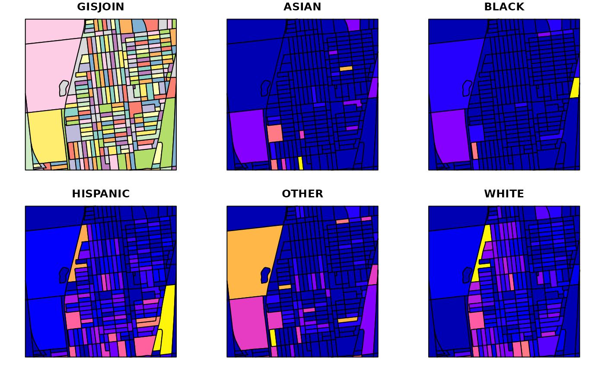
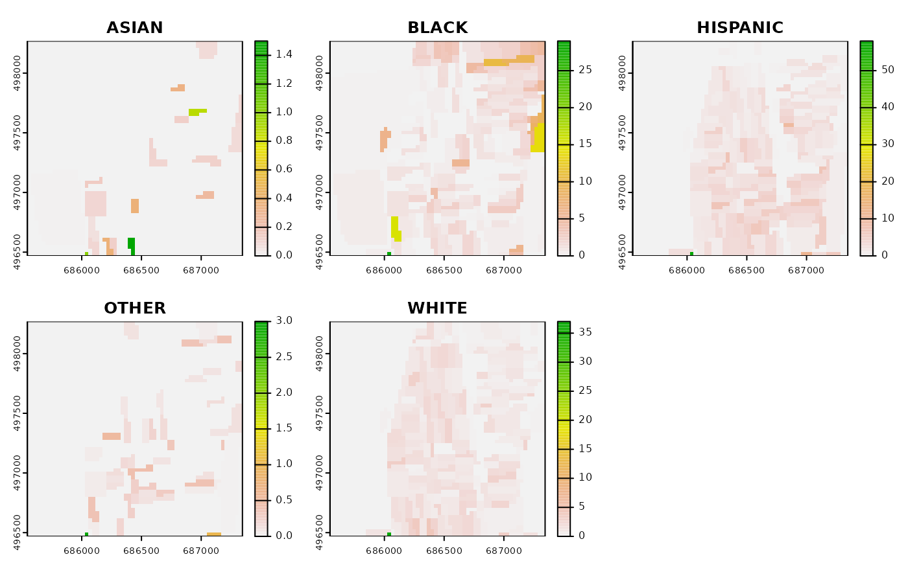

Convert zones to rasters
zones_to_raster(v, resolution, variables, ...)
| v | An sf object (POLYGON or MULTIPOLYGON) |
|---|---|
| resolution | A numeric vector of length 1 or 2 to set the resolution |
| variables | A character vector with columns names from |
| ... | Additional arguments as for |
a RasterStack
#>popdens_raster = zones_to_raster(pop_vector, resolution = 30, variables = c("ASIAN", "BLACK", "HISPANIC", "OTHER", "WHITE"))#> Warning: Discarded datum Unknown based on GRS80 ellipsoid in CRS definition